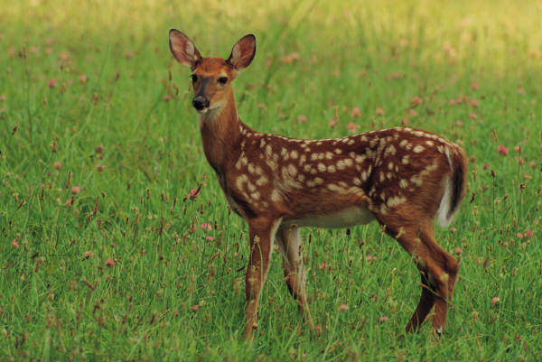

Sanjay Gandhi National Park (SGNP), previously called Borivali National Park, is a large protected area in the northern part of Mumbai city (preferably called Mumbai Suburban district) in Maharashtra State in India.It encompasses an area of 104 km2 (40 sq mi) and is surrounded on three sides by India's most populous city. It is notable as one of the major national parks existing within a metropolis limit and is one of the most visited parks in the world. The rich flora and fauna of Sanjay Gandhi National Park attracts more than 2 million visitors every year. Tourists also enjoy visiting the 2400-year-old Kanheri caves sculpted out of the rocky cliffs which lie within the park.
|  | |
| Location : | Mumbai, Maharashtra, India |
| Coordinates | 19°15′N 72°55′E |
| Area | 104 km2 (40 sq mi) |
| Established | 1969 |
| Governing body | Ministry of Environment and Forests |